Click on a section to go through the statistics
Latino students account for 10 percent of Indiana's student enrollment

Latino students account for 10 percent of suspensions, or one out of 14 Latino students are suspended
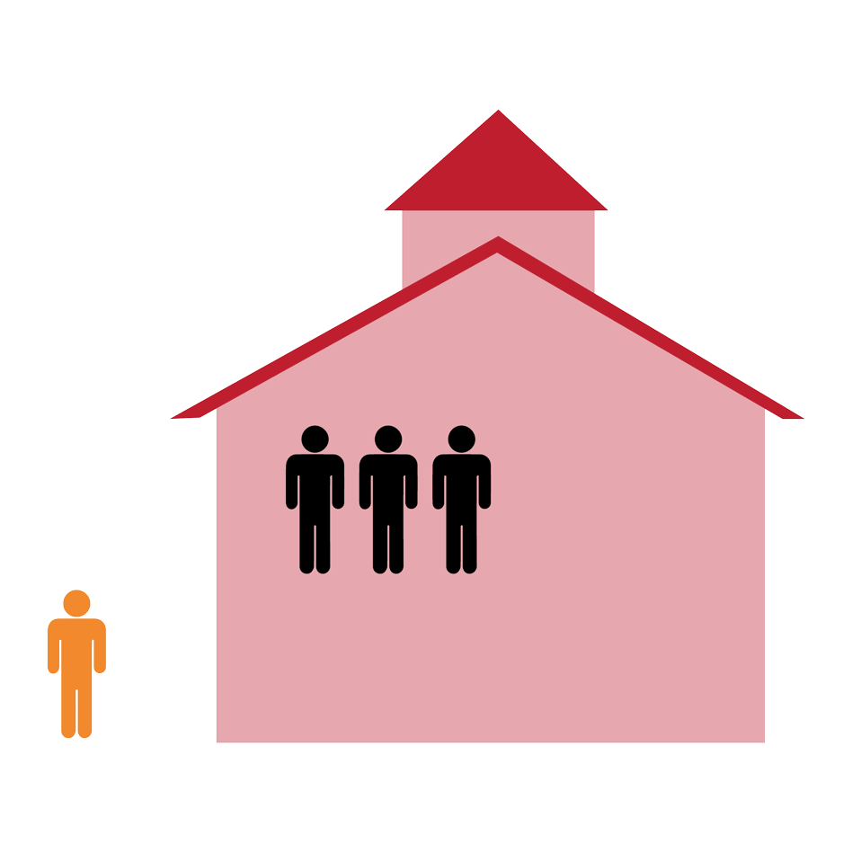
Latino students account for 9 percent of arrests, or one out of 11 arrests are a Latino student
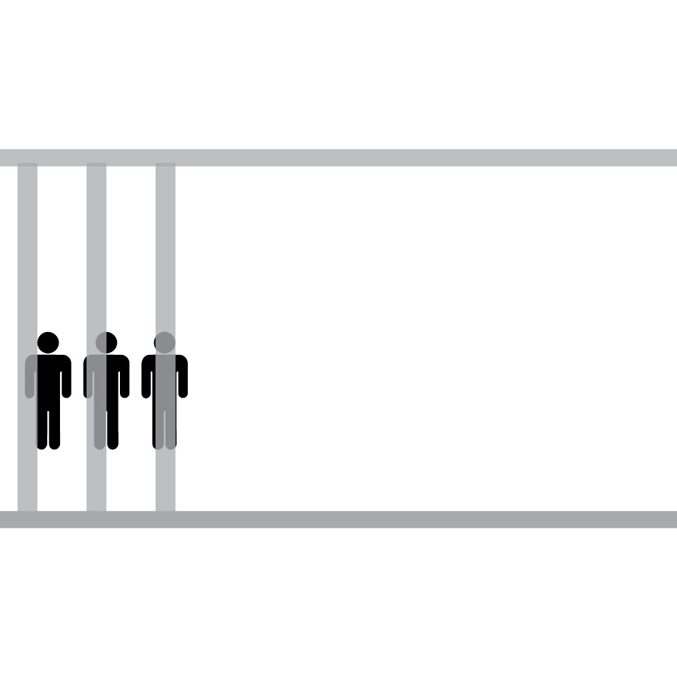
67 percent of Latino students attend schools where more than one-fifth of teachers are absent more than 10 school days a year

Latino students have a graduation rate of 85 percent, or one out of 10 Latino students don't graduate on time
Click on a section to go through the statistics
Black students account for 12 percent of Indiana's student enrollment
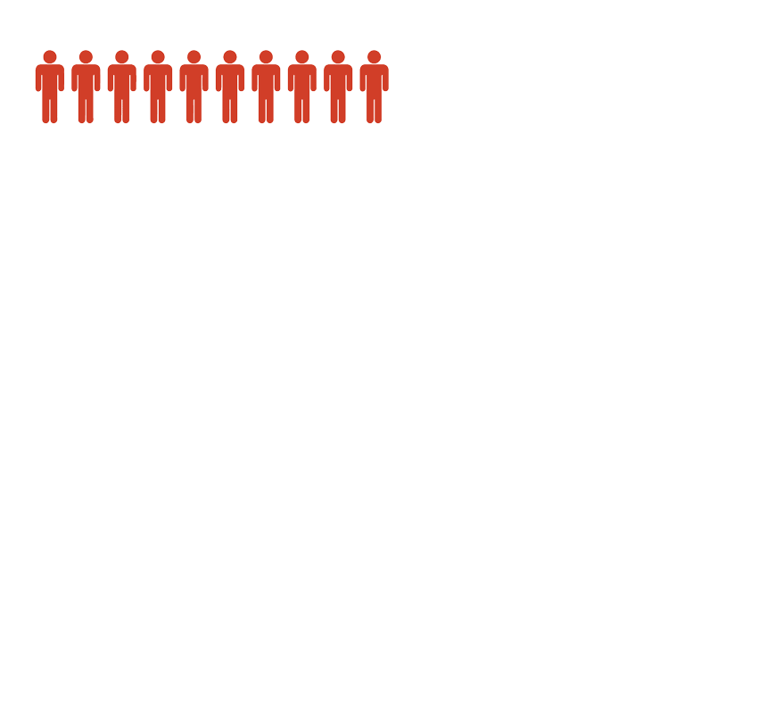
Black students account for 34 percent of suspensions, or one out of five black students are suspended
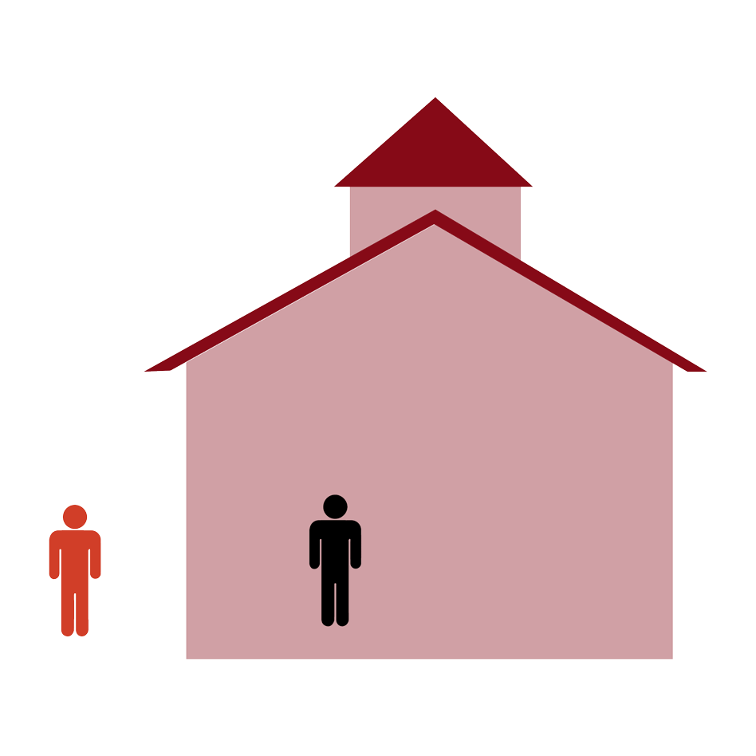
Black students account for 29 percent of arrests, or one out of three arrests are a black student
57 percent of black students attend schools where more than one-fifth of teachers are absent more than 10 school days a year
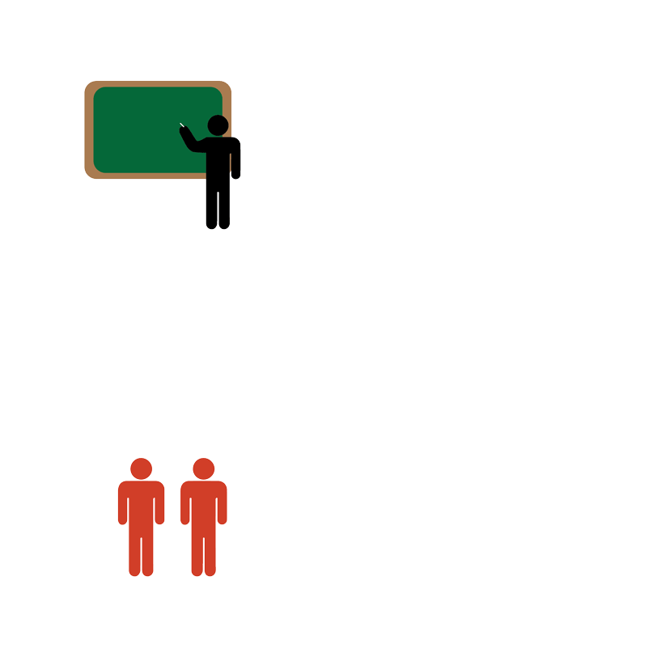
Black students have a graduation rate of 78 percent, or one out of four black students don't graduate on time
Click on a section to go through the statistics
Students with disabilities account for 16 percent of Indiana's student enrollment
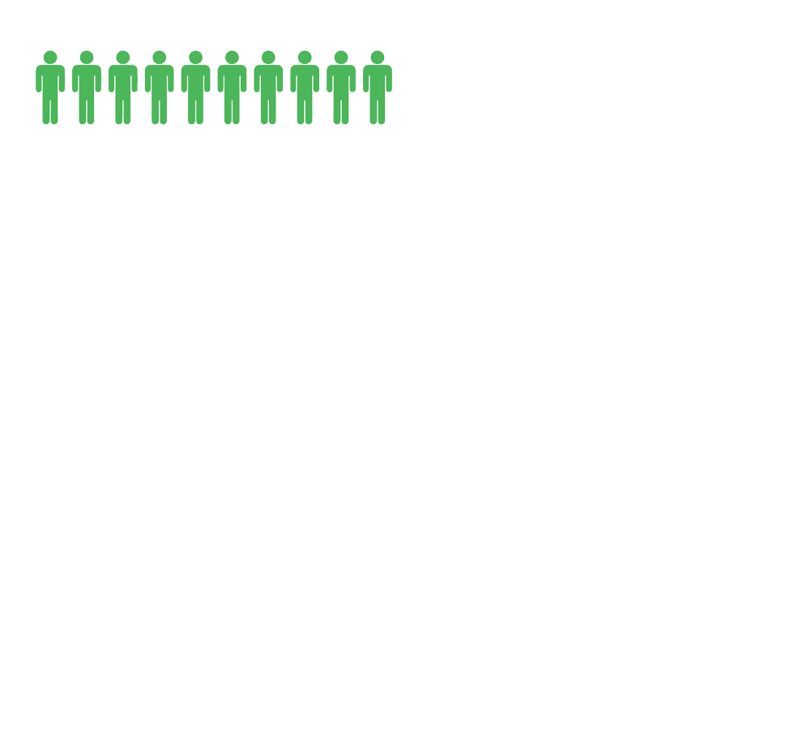
Students with disabilities include students of different races
Students with disabilities account for 30 percent of suspensions, or one out of seven students with disabilities are suspended
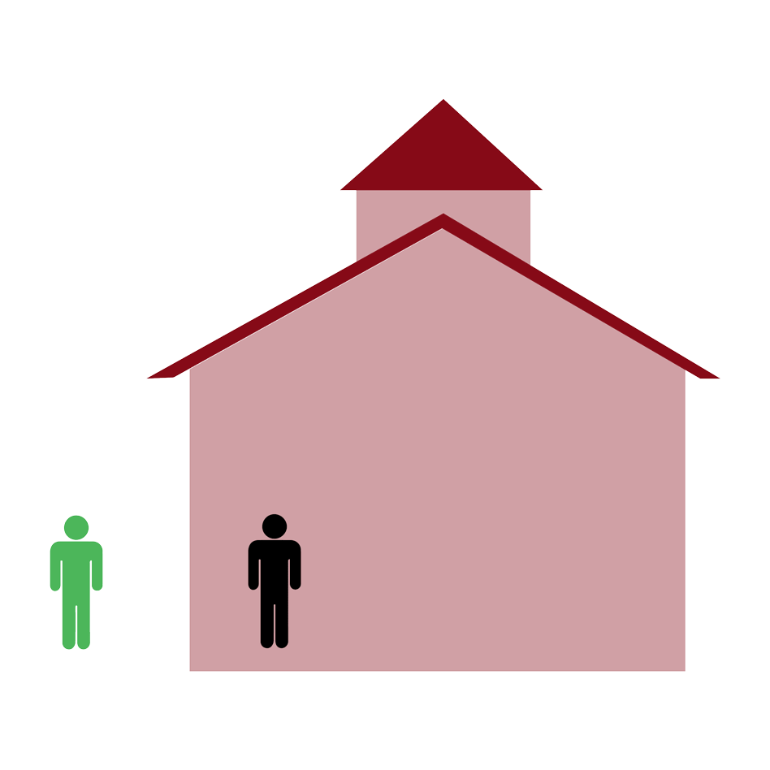
Students with disabilities include students of different races, and are included in the same figure with their race
Students with disabilities account for 26 percent of arrests, or one out of four arrests are a student with a disability
 Students with disabilities include students of different races, and are included in the same figure with their race
Students with disabilities include students of different races, and are included in the same figure with their race
Students with disabilities have a graduation rate of 73 percent, or one out of four students with disabilities don't graduate on time
Click on a section to go through the statistics
White students account for 71 percent of Indiana's student enrollment
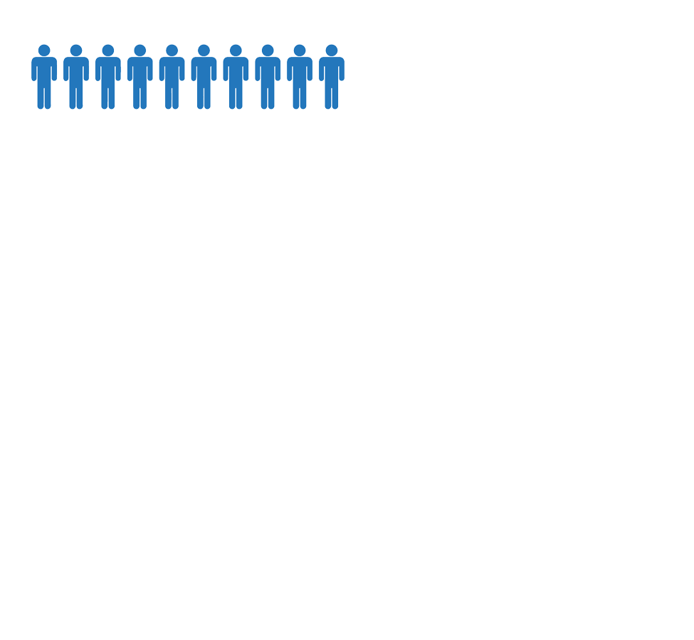
White students account for 46 percent of suspensions, or one out of 20 white students are suspended
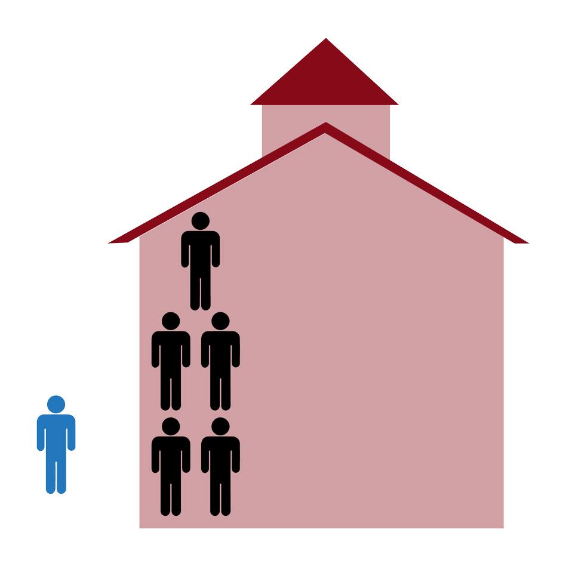
White students account for 53 percent of arrests, or more than half of arrests are a white student
58 percent of white students attend schools where more than one-fifth of teachers are absent more than 10 school days a year
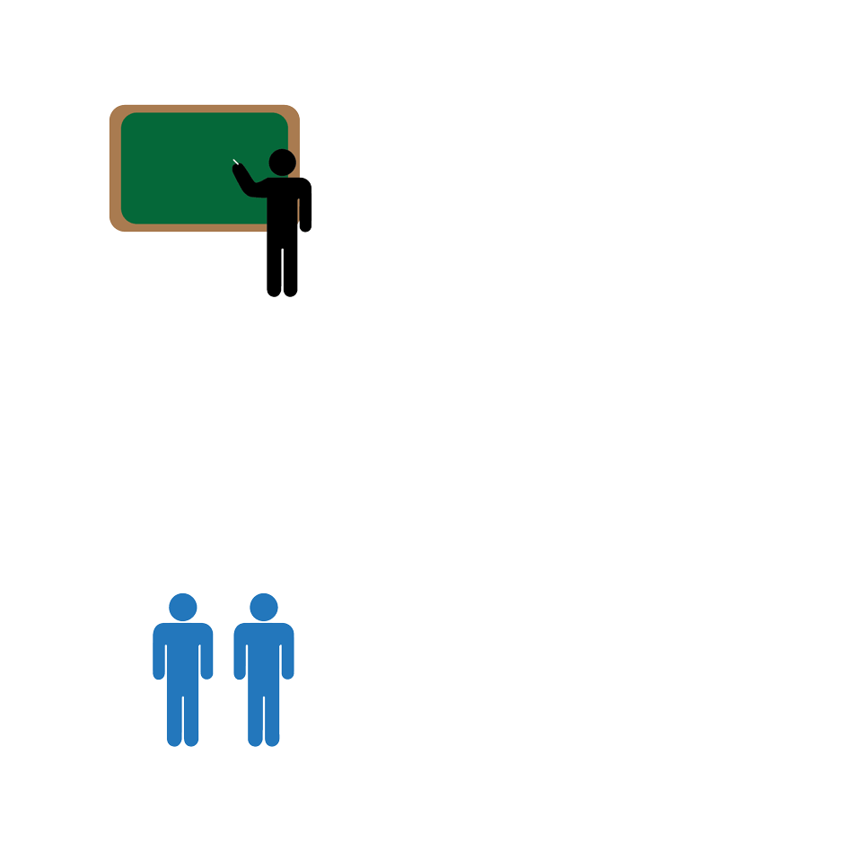
White students have a graduation rate of 88 percent, or one out of 10 white students don't graduate on time
Click on a section to go through the statistics
These statistics play out in classrooms across Indiana.
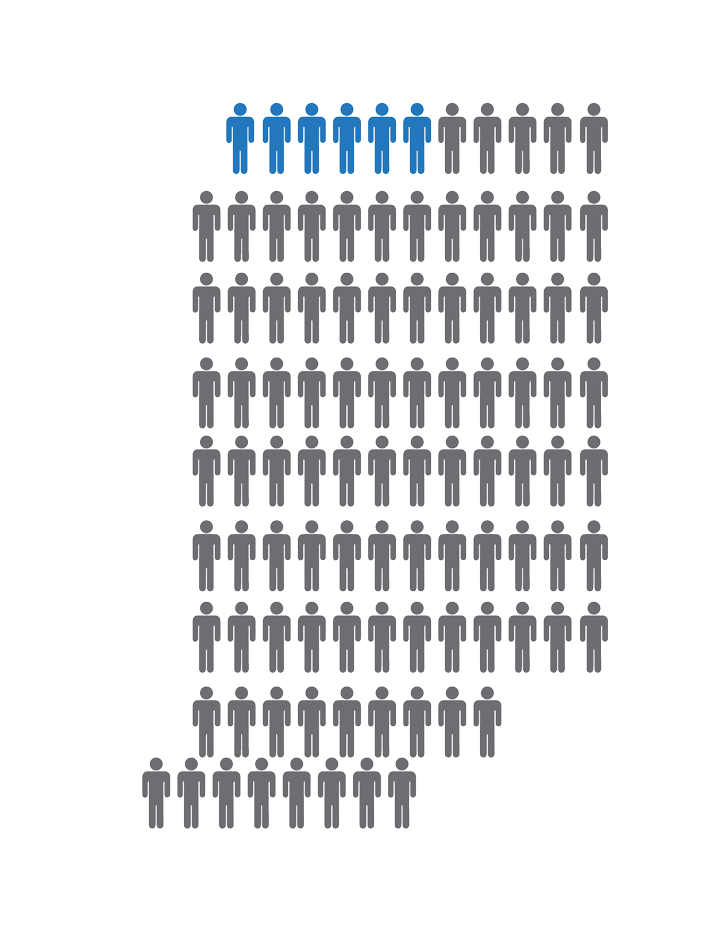
We're going to continue to analyze these differences.
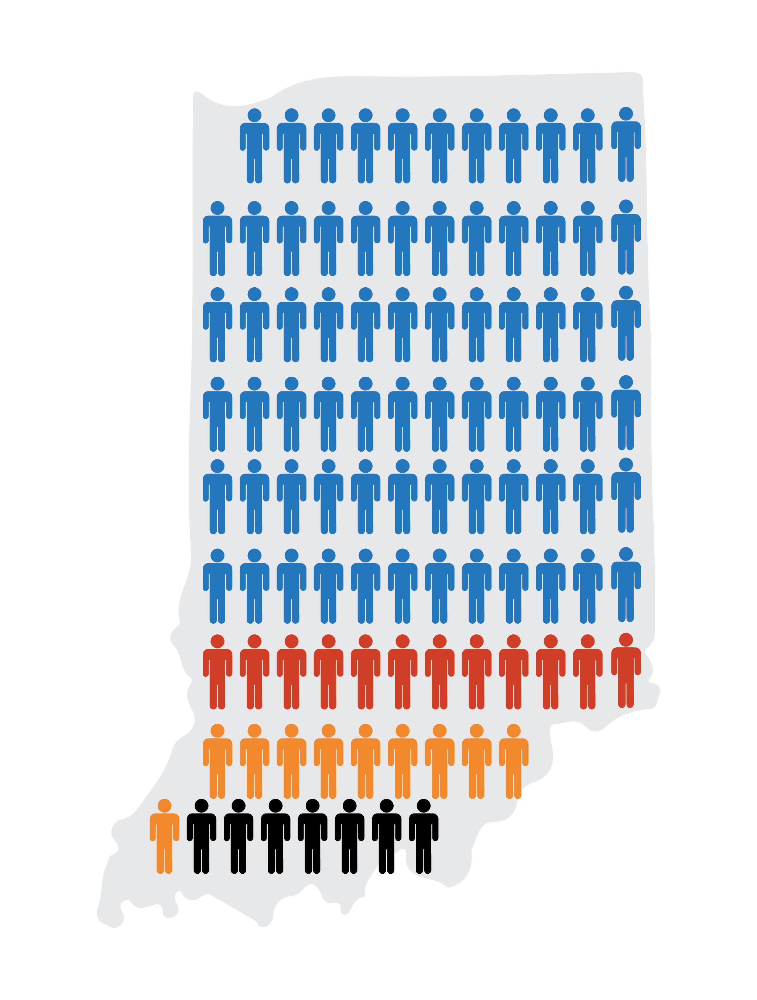


 Students with disabilities include students of different races, and are included in the same figure with their race
Students with disabilities include students of different races, and are included in the same figure with their race